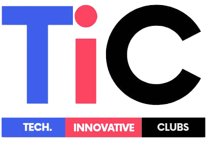

I am one of the organizer of TIC (Tech Innovation Challenge - link:
https://youtu.be/p4SQ011cD2E). TiC is aimed at empowering secondary school students to solve pertinent problems faced by their communities with the use of technology. I taught the participants problem-solving during the first phase of the competition (
link to the course video). I was a member of the project management team and the leader of the transport and logistics department. In the Transport and logistics team, I was in charge of visiting transport agencies to hire a bus which could ensure the transport of the participants to various IT companies in Yaounde - for workshops on 3D printing drones and field testing. As part of the project management team, I was also responsible for setting up a Google form for students to submit their final projects, assist in creating the event program, and ensuring that the hall was ready and equipped with all of the necessary resources. Due to a lack of funds to hire photographers to cover the event , I learnt the basis of photography online to cover the event. This was a great opportunity to learn another skill amongst music, drawing, singing and writing which I gained over the years. I can push my community empowerment to a greater height by lending a helping hand to secondary school students who strive to solve problems they identify in their community with the help of technology. I assist these students in achieving their goals through self-recorded video tutorial lessons on problem-solving, prototyping, and business management, among other topics, and this brings me great joy.
The TIC journey was full of learning experiences. I had the opportunity to visit the polytechnic 3D printing center in Yaounde and network with engineers working there. One of the greatest lessons I learned was the power of teamwork. After the TiC Summit in April 2021, I conducted interviews with some of the participants and I realized the competition had a real impact in their lives. I am currently mentoring a team who got new ideas to develop their projects after visits to the different IT companies in Yaounde. Being guided by my will to help others, I realized that “as we lose ourselves in service to others, we discover our own lives and our happiness” - Dieter F. Uchtdorf.
Today, we have organised and launched a summer trianing bootcamp. There, we train the participant in block chain skills, web development, graphic design, Application Development and more again. We provide study material, internet connection and a conducive environment for them to understand all the courses which are given to them.
